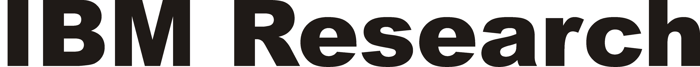

Papers are solicited in areas that support such mapping and optimization:
- Compilers, back-end code generators, translators, binary optimization tools and runtime environments; static, dynamic, adaptive, or continuous techniques
- Innovative analysis, transformation, and optimization techniques
- Memory management, including data distribution, synchronization and GC
- Thread extraction and thread-level speculation, especially for multi-core systems
- Vertical integration of language features, representations, optimizations, and runtime support for parallelism (including support for transactional semantics, efficient message passing, and dynamic thread creation)
- Phase detection and analysis techniques
- Mechanisms and optimization techniques supporting the efficient implementation of security protection models, reliability and energy efficiency
- Traditional compiler optimizations
- Intermediate representations that enable more powerful or efficient optimization
- Hardware mechanisms and systems that implement or assist in any of the above
- Experiences with real dynamic optimization and compilation systems, particularly with large, complex applications
- Explorations of trade-offs concerning when (static/dynamic) and where (software/hardware) to optimize
- Particularly novel ideas of interest to this community
| Sponsored by | |
 IEEE CS TC-uARCH
IEEE CS TC-uARCH |
 ACM SIGMICRO
ACM SIGMICROACM SIGPLAN |
| CGO-2009 Corporate Sponsors | ||
 |
 |
|
 |
 |